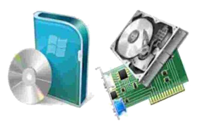

¿QUÉ ES LA INFORMÁTICA?
La palabra informática proviene de otras dos palabras: Información y Automática. La Informática es una Ciencia. Es la Ciencia que estudia el Tratamiento Automático de la Información. Vamos a profundizar un poco más en esto. El tratamiento automático se hace mediante los sistemas informáticos que son los llamados Ordenadores o Computadoras. Manejar un procesador de textos no se considera informática, sino Ofimática, pero crear un programa con el que podamos editar textos si lo es. La informática estudia lo que los programas son capaces de hacer (teoría de la compatibilidad), de la eficiencia de los algoritmos que se emplean (complejidad y algorítmica), de la organización y almacenamiento de datos (estructuras de datos, bases de datos) y de la comunicación entre programas, humanos y máquinas (interfaces de usuario, lenguajes de programación, procesadores de lenguajes ...), entre otras cosas. La importancia de la informática en nuestros días se debe a que está presente en nuestras vidas de forma habitual y de ella depende el avance de las nuevas tecnologías.
¿Qué es una computadora?
Para entender que es una computadora comenzaremos por dar la siguiente definición:
"Una computadora es un dispositivo electrónico utilizado para el procesamiento de datos. La misma posee dispositivos de entrada y salida (E/5) que permiten a los usuarios interactuar con
esta información."Este procesamiento de datos es
mucho mas amplio que apenas calcular números o imprimir datos. Es posible escribir notas e informes, proyectar, realizar complejos cálculos de ingeniería, utilizarla como medio para la creación de obras fotográficas, musicales y de video y por supuesto interactuar con otras.
¿Qué es una computadora?
- Hardware
- software
El hardware es el término utilizado para referirse a los componentes físicos de una computadora. Son componentes electrónicos, que se pueden tocar. Es el nivel más básico en el cual la computadora funciona. Toda la información que se procesa en una computadora, pasa si o si por el procesador, un chip responsable de esa tarea, de procesar información. Es el cerebro de una computadora. La memoria es hardware, la grabadora de CD es hardware, el monitor es hardware.
Podría decirse que el software es el que le da vida a una computadora, pero este no funcionaria de no ser por el hardware, es decir que se necesitan mutuamente.
El programa Windows es uno de los mas claros exponentes de software. Windows es un sistema operativo, es decir, el software "alma" de la computadora, el programa en el cual se basan los demás programas para funcionar. Windows no es el único sistema operativo, pero si el mas popular.
¿Qué es una computadora?
- uno
- dos